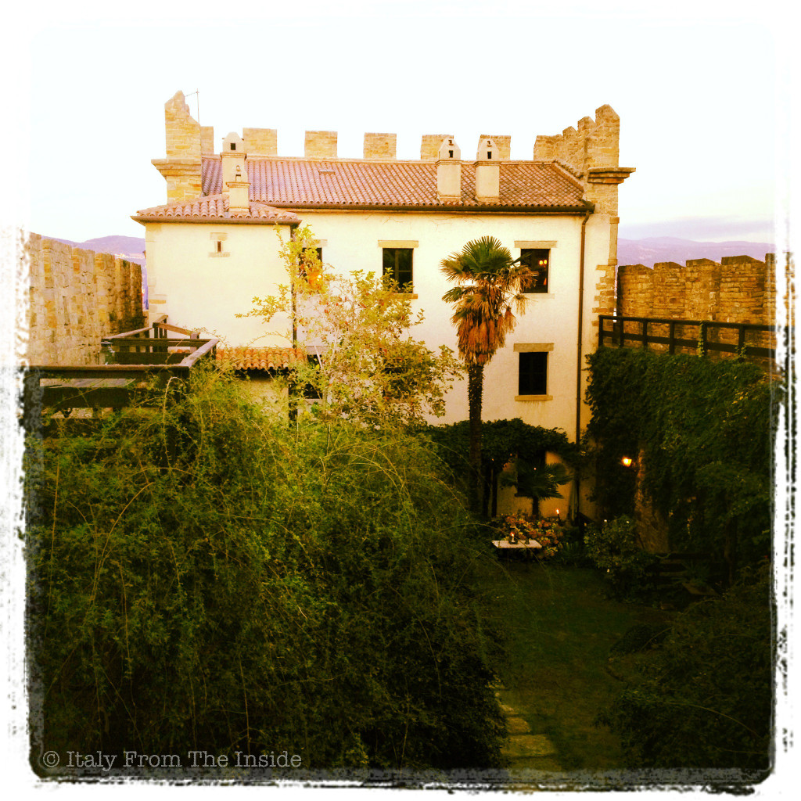
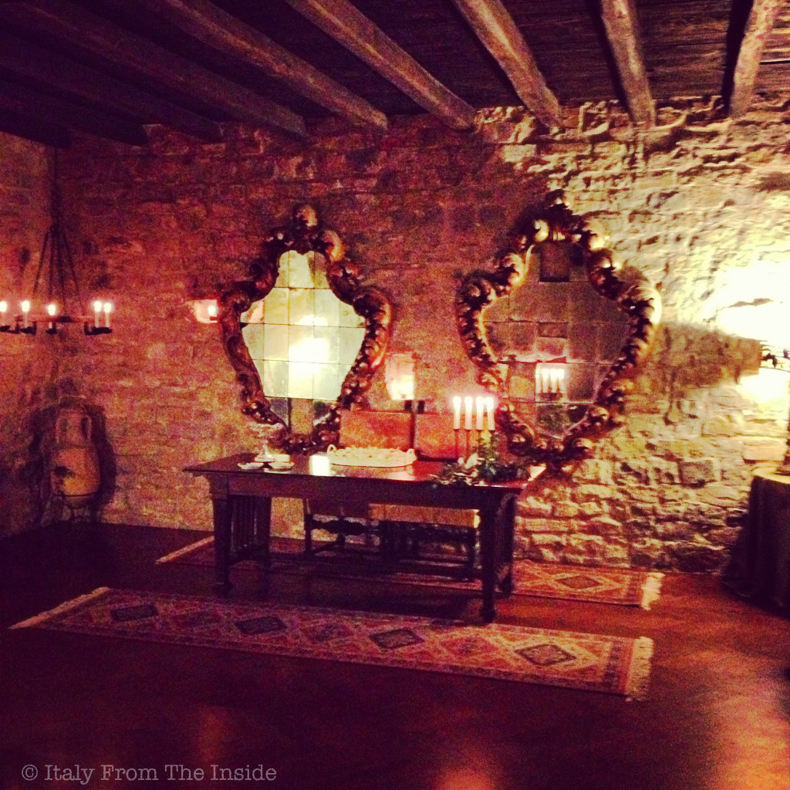

It is simply known as Castelletto di Muggia and it's a treasure to discover. Built in 1374 as a military defense, the castle went through many vicissitudes until its complete dereliction in the 80s. But as any fascinating tale fortunately there's a happy ending: in 1991 two artists purchased the castle and brought it back to its original beauty.
Today it is a private residence, but its doors open to musical events and special occasions. As a matter of fact this is the place where my in-laws celebrated their 50th wedding anniversary... with a golden cake. I couldn't think of a better place to do it.